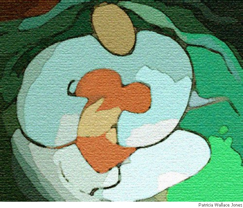

Nigel McLoughlin
A New Take
(from the Irish of Cathal Ó Searcaigh)
You becalm me out of morning
mist with musk of bog myrtle
on your heather cloak. The white
streams, limbs, flowing around me,
giggling, welcoming me with skylarks.
You gaze at me, translucence in those
big lake-eyes: Loch an Ghainimh and
Loch Altáin, each full of clear sky,
glowing like summer on your cheeks.
You loose a veil of mountain breeze;
a May heat-haze that looses easily the
secrets of my heart. And I see completely
all the beloved boundaries of your body:
from Log Dhroim na Gréine at the hollow
of your back to Alt na hUillinne’s elbow bend.
Through Mín na hUchta, the valley
of your breasts and the red slope of
your cheeks at Mhalaidh Rua, my eyes
slide over your concave, convex beauty;
each sun-spot, each beauty-spot
I had forgotten since I left you.
But I know now what the city lacks
and I pray for an end to exile, for shelter
here between the paths of your white legs;
for a new turn in the poem of my destiny.

Shepherd
(from the Irish of Cathal Ó Searcaigh)
Here sixty years of hardships are
calloused in the grip of his claggy mit.
The constant struggle with the tyrant
mountain above Loch Altan shows
in the sloth of his walk. This mean,
famine stricken land has drunk
for years the sweat of his effort,
left him spent, drained him dry
as a bog stump. Those desires
that bloomed in his heart’s district
withered quickly. This is Prochlish:
remote in the mouth of wilderness.
The sky frowns, the sun laughs wryly.
There, under Achla’s monstrous shadow
no woman pleasured him, kisses never lit.
Love’s jubilation never rose in his heart’s tundra.
These little flocks of sheep have the run
of the mountain, dogging from Mín na Mhadaidh
to the top of Beithí, but he is bound
between the menacing ditches.
When the drop’s in, he’s out
like a wandering sheep leaping
the mind’s ditch, looking for grass
in the hungry winter of the dark,
rooting the recesses of the mountain.
Beyond, when he sees a scattering of bones
on the path or when his dogs rend at carrion,
he is heart struck by the fear of death.
Among the woolly silence of the rocks,
the oozy drip of bacon fat, repeats, burning
in his guts like the heavy dark that thickens
in his mind, falls like a stone from Achla,
fires the night-terrors and the dreaming.
Yonder, in the bare flagged kitchen
hunched in his chair over a meagre fire
he mutters and mumbles at the loneliness;
cursing it away. Terror snarls at the conflagration
from the dark, waiting to sneak in. It gnaws
at his head like the rats in the ceiling
clawing and nibbling at the edges of his mind.
Once, his heart would swell and thump
with pride at the Dromma Mór thundering
through the crossroads on St. Patrick’s Day.
But these nights now, he lies on his bed
listening to the muffled drum of his own heart
as it weakens, begins to falter.
Nigel McLoughlin is Principal Lecturer in Creative Writing at the University of Gloucestershire. He holds MA and PhD degrees in Creative Writing from Lancaster University. His poems and translations from Irish and German have been widely published in the UK, Ireland and abroad. His fourth collection of poetry is Dissonances (Bluechrome, 2007, ISBN 978-1-906061-14-2).
|